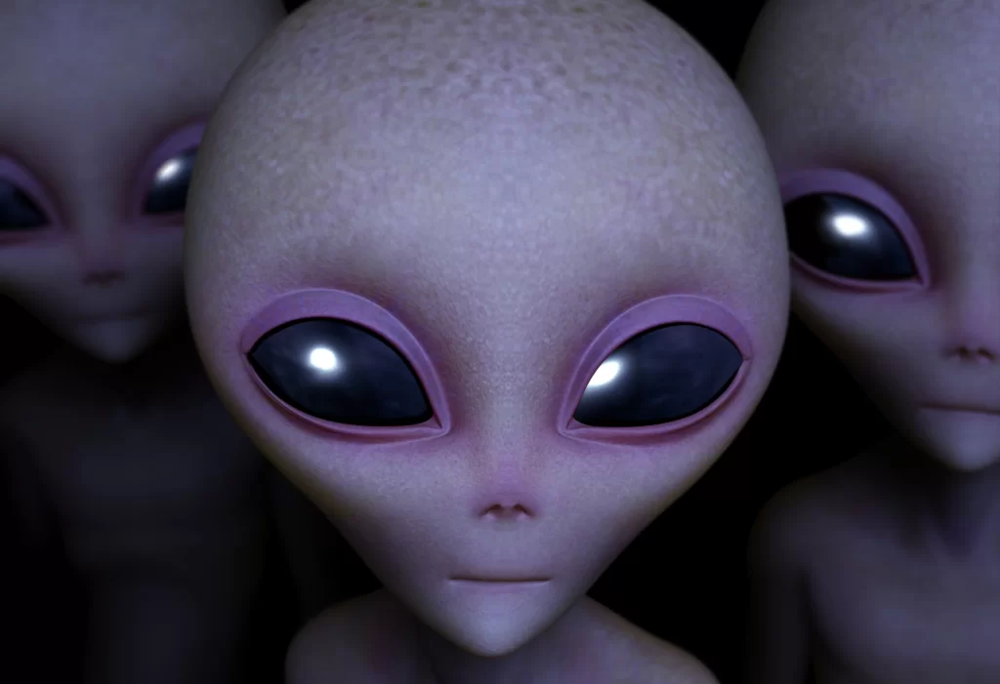

A existência de vida fora da Terra é uma das questões que mais intriga e fascina a comunidade científica. Pudera. Com pelo menos 100 bilhões de outros planetas apenas em nossa galáxia, as chances de que organismos vivos estejam dando sopa a milhares de anos-luz daqui são realmente muito grandes.
Panspermia explica a hipótese de que a vida existe em todo o Universo, distribuída por meteoros, asteroides e planetoides. Em suma ela propõe que seres vivos que podem sobreviver aos efeitos do espaço, ao estilo dos extremófilos ou tardígrados, ficam presos nos escombros que são ejetados ao espaço ou por colisões entre pequenos corpos do sistema estelar e planetas que abriguem vida, ou mesmo por catástrofes maiores de natureza similar. Os tardígrados ou similares viajariam dormentes nos destroços por um longo período de tempo antes desses colidirem aleatoriamente com outros planetas ou misturarem-se com discos protoplanetários de outros sistemas estelares.
|  | Tipo | Caraterísticas |
|---|---|---|
| Reptilianos | alienígenas reptilianos que alteram de forma controlam a Terra assumindo a forma humana e ganhando poder político para manipular as sociedades humanas. | |
| Homenzinhos verdes | Pequenos alienígenas humanóides. | |
| Chupacabra | Ser extraterrestre semelhante a um réptil, tendo baixo estatura. |